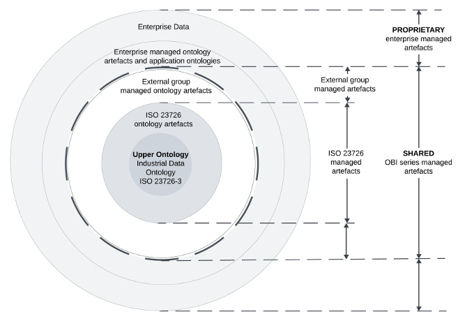
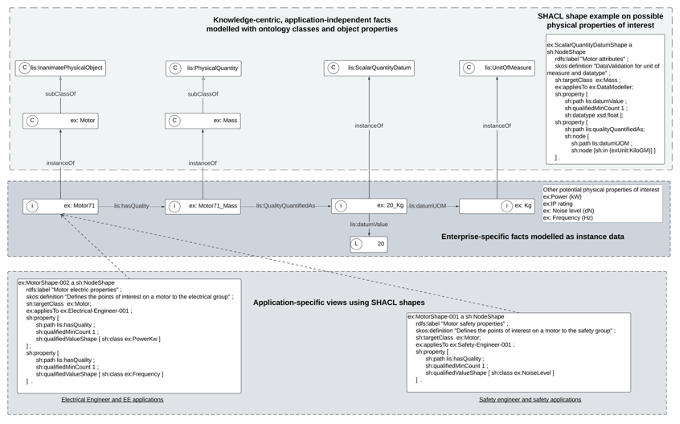

Introduction
Machine-interpretable data are a key enabler of 1) industrial automation, and 2) the
application of artificial intelligence to products, plants, processes, and services.
However, organizational data are often stored in digital formats that use proprietary
terms, definitions, and schemas. This lack of
semantic interoperability means that data exchange frequently relies on manual interpretation or custom mappings.
Documents such as engineering standards, procedures, spreadsheets, and reference data
libraries are prone to misinterpretation when their semantics are not formally and
explicitly defined.
A semantically explicit format is key to human and machine interoperability. An ontology
is a structured set of terms, their interrelationships, and associated definitions,
supported by formal logic to ensure that the intended meaning is unambiguous and machine-interpretable.
The use of formal representation enables consistent preservation and exchange of meaning.
Ontologies are increasingly integrated into enterprise architecture, particularly
within knowledge management layers. An example is shown in Figure 1. The Ontology-Based interoperability (OBI) ecosystem comprises artefacts managed
by ISO 23726 WG26, external organizations, enterprises, as well as organizational
stakeholders, processes, and capabilities.
Figure 1
—
Example of enterprise architecture for OBI ontology-based interoperability
At the base of the Figure 1 is a level representing the data sources created by enterprises and stored in the
data storage system layer. To organize, check, and integrate data from disparate source
systems, organisations are incorporating a knowledge management layer into their enterprise
architecture. An ontology-based knowledge management layer provides quality controlled,
interoperable data for data products, analytics and AI used by data consumers within
and across organisations. IDO is the
upper ontology in the
OBI ecosystem knowledge management layer. In addition to IDO the knowledge management layer includes
enterprise ontologies and shared artefacts such as reference ontologies, ontology modelling patterns,
templates,
reference data libraries, data quality rules, SHACL shapes, and SPARQL queries. Above the knowledge management
layer sits in an enterprise architecture for
data products, data analytics and artificial intelligence models which are accessible to data consumers.
The W3C standards Web Ontology Language (OWL) and Resource Description Framework (RDF)
are foundational standards for the
Semantic Web and considered normative for ontologies in the Ontology based interoperability (OBI)
standards. These standards enable machine -readable, semantically interoperable representations
based on shared vocabularies and logical structures. The foundation for the OBI series
is ISO 23726-3, the Industrial Data Ontology (IDO).
IDO specifies an abstract representation of the industrial data domain, including
a high level of conceptual abstraction and associated modelling constraints. The semantic
interpretation of a concept modelled according to an IDO-aligned artefact is explicitly
defined. This enables consistent interpretation and automated reasoning by both humans
and machines.
IDO is implemented as an OWL 2
upper ontology. OWL 2 DL ontologies are interpreted using the Direct Semantics. DL (
description logics) are a family of languages used in artificial intelligence and
Semantic Web technologies for logic-based knowledge representation and reasoning. Typical
ontology reasoning tasks include: (1) consistency checking, (2) automated classification (i.e. inferring
implicit subclass hierarchies), and (3) derivation of implicit facts. OWL DL reasoners
are software systems that perform these reasoning tasks automatically. Such automated
reasoning is essential for quality assurance, semantic consistency, and knowledge
inference within ontologies.
1 Scope
This draft provides an overview and the fundamental principles of the multipart
standard ISO 23726 series Industrial automation systems and integration – Ontology based interoperability (OBI).
This draft specifies the principles for ontologies and artefacts aligned with IDO
upper ontology to be considered part of the OBI series.
This draft is applicable for the representation of engineering data associated
with all phases of the life cycle of industrial products, plants and systems to enable
semantic interoperability.
The following are outside the scope of this draft:
-
specification of ontology languages.
-
-
specification of methods for reasoning with ontologies.
-
Methods to build, maintain, align, and evaluate ontologies and artefacts to meet the
principles in this draft. These will be covered in separate guideline drafts.
4 Parts in the OBI series
4.1 Overview and fundamental principles
This document presents a vision for the
OBI ecosystem (3.5.2) and a set of principles (Clause 6) to ensure artefacts in the OBI series are compliant with a set of principles.
4.2 Vocabulary
This document describes the terms and definitions used in the ISO 23726 standard series.
4.3 Industrial Data Ontology
This document describes the Industrial Data Ontology (IDO), an ontology intended for
industrial data and information, to build vocabularies and manage asset models which
employ reference data libraries and exploit OWL DL.
The IDO standard described in ISO 23726-3 provides a foundation for all parts of the
ISO 23726 standards.
The purpose of the IDO standard is to serve the representation and integration of
industrial data and industry standards. This means, to build vocabularies and asset
models, to manage asset models which employ reference data libraries, and to support
automated machine reasoning and data quality. The IDO standard supports information
models used in all life cycle phases of industrial systems, processes and products.
4.4 Schedule Data Ontology
The Schedule Data Ontology specifies the vocabulary for schedule data and information.
It is intended for industrial schedule data and information. The ontology provides
definitions for terms related to schedules, schedule activity, work patterns for schedule
execution, and the relationships between schedule activities and resources.
5 OBI ecosystem
5.1 General
This informative section provides an overview of the
OBI ecosystem (3.5.2) and introduces ontology concepts relevant to the other sections in this Standard.
The
OBI ecosystem (3.5.2) includes ontologies, artefacts, stakeholders, and processes.
In order to achieve semantic data exchange and interoperability within and between
organisations there has to be principles to which data modellers adhere and an infrastructure
and mechanisms to find, assess and exchange artefacts . In the
OBI ecosystem (3.5.2) these principles (see Clause 6) are informed by the
upper ontology (3.1.4) (ISO 23726-3 Industrial Data Ontology) and its ontological commitments. The principles
for an artefact being a trusted part of the OBI series are set out in Clause 6.
Figure 2 shows artefacts in the
OBI ecosystem (3.5.2). These include 1) shared and proprietary artefacts, and 2) ISO 23726 managed and
external group managed artefacts, as follows.
-
a) Industrial Data Ontology ISO 23726-3 (IDO) - this
upper ontology (3.1.4) is shown at the core of the diagram.
-
b) ISO 23726 managed artefacts from the ISO 23726 series. These shared artefacts are
shown as the grey circle around IDO. They are assured by ISO processes and available
through ISO. They are governed by the ISO-recognised
Maintenance Agency (3.5.1) for ISO 23726.
-
c) External group managed artefacts that meet the principles set out in this Standard.
These are shown in the white circle. External groups include, for example, other standards
bodies and industry organisations. Within each external group there is a body (called
the ISO-external
Maintenance Agency (3.5.1)) responsible for the assurance and maintenance of the artefacts.
-
d) Shared OBI series managed artefacts (OBI artefacts and external group managed artefacts).
These sit within the black dashed line in Figure 2. The creation and maintenance of these shared artefacts enables efficient construction
of ontologies. Examples of common shared artefacts include
reference ontology (3.1.3), and
reference data libraries (3.3.5).
-
-
f) The enterprise data layer is shown as the outer grey circle.
-
g) The outer two circles are managed by individual enterprises. These artefacts and data
are proprietary and developed to address specific business needs and decisions.
Figure 2
—
Artefacts in the OBI ecosystem. Artefacts inside the dashed line are trusted and shared
between enterprises. Artefacts and data between the two outside dashed lines are proprietary
and managed by an enterprise.

5.2 Stakeholders in the OBI ecosystem
Stakeholders in this ontology-centric ecosystem include (but are not limited to) asset
owners and operators, engineering product and process plant designers, standards organisations,
industry groups that manage reference data libraries, organisations involved knowledge
representation and AI, and those providing ontology development and maintenance services,
assurance and conformity assessment services.
The Maintenance Agencies are a vital component of the
OBI ecosystem (3.5.2) because enterprises require quality control to build trust that artefacts are managed
and maintained by an accountable body.
The diagram in Figure 3 shows an example of how an enterprise might use trusted artefacts from 1) ISO 23726,
2) its internal artefacts (shown in the upper box), and 3) artefacts provided by external
groups compliant with this OBI standard (shown in the white box). The figure also
includes some examples of roles involved in each stage of the process. The same person
may have a role as part of an enterprise's internal process as well as part of an
external group's process.
Figure 3
—
Illustrative example of processes and roles involved in managing an enterprise ontology
ecosystem which uses both internal and externally-managed trusted OBI series ontologies
5.4 Reference ontologies
There is no agreement in the community as to a naming convention for ontologies between
the top-level and an
application ontology (3.1.1). Various names such as Core, Domain, Domain-independent, Domain-dependent are used
but not clearly defined. Reference ontologies is used here as a label for all of these.
Many
application ontologies (3.1.1) will import a number of
reference ontologies (3.1.3). This information is presented in Figure 4.
Figure 4
—
Illustration of the different terms used in ISO 23726 to describe different types
of ontologies
Reference ontologies developed and managed by external groups such as W3C do not align
to any specific
upper ontology (3.1.4). Modellers may use individual classes or import the entire ontology. In the latter
case, care needs to be taken that ontological commitments for artefacts in the OBI
series do not conflict with modelling
class restrictions (3.2.3) in external reference ontologies.
Where reference ontologies are commonly used in OBI there will be IDO-aligned support
documentation produced. Examples of this for OWL-Time, SSN and GeoSPARQL are provided
in Annex C of the ISO 23726-3 document.
EXAMPLE 1
Examples of reference ontologies developed and maintained by the World Wide Web Consortium
(W3C) include the following:
OWL-Time: an OWL-2 DL ontology of temporal concepts, for describing the temporal properties
of resources in the world or described in Web pages
https://www.w3.org/TR/owl-time/SSN/SOSA: the Semantic Sensor Network is an ontology for describing sensors and their
observations, the involved procedures, the studied features of interest, the samples
used to do so, and the observed properties, as well as actuators
https://www.w3.org/TR/vocab-ssn/
EXAMPLE 2
Examples of reference ontologies developed and maintained by non-ISO, non-W3C organisations
include the following:
GEOSPARQL: this spatial domain OWL ontology relating literal representations of geometries
to with spatial features. It is maintained by the Open Geospatial Consortium (OGC)
https://www.ogc.org/standards/geosparql/
There is an evolving space developing ontologies for specific domains such as parts
of the engineering life cycle, equipment classes, and the information in engineering
standards.
EXAMPLE 3
Ontologies for business processes (e.g. scheduling, maintenance), for equipment (e.g.
piping and valves), and for specific international standards (e.g. IEC 61360-1:2017[2]).
5.5 Reference data libraries
The engineering community has a history in developing reference data libraries (
RDL (3.3.5)). These are intended as shared resources managed by standards bodies and industry
associations. Examples include CFIHOS, ECLASS, ISO 15926-4 and IEC CDD.
These RDLs may be managed by different external groups. These groups sit outside of
the control of the ISO 23726 committee. In these situations, the following are some
suggestions.
-
a) Both groups align completely, and prefer to share a term and namespace
-
b) Both groups align (perhaps after one or both groups make some concessions modifications)
and they get to create the "valve" term in each of their namespaces with an appropriate
annotation between the two terms.
-
c) The groups cannot meet a common ground. They diverge, but note a "caveat" in their
metadata (3.4.3), noting the misalignment with another term / concept in the OBI series.
5.6 Relationship to Semantic Web technologies
IDO is an OWL 2
upper ontology (3.1.4). It is formulated in OWL DL, a sublanguage of OWL 2 based on
description logics (3.2.4) (DLs). DLs are a family of languages used in artificial intelligence and
Semantic Web (3.4.4) technologies for logic-based knowledge representation and reasoning. Typical
ontology reasoning (3.2.8) tasks include: (1) consistency checks; (2) automated classification, i.e. inference
of implicit class hierarchies; (3) inference of new facts. OWL DL reasoners are software
engines that automatically perform OWL DL
ontology reasoning (3.2.8) tasks. In addition to providing a high-level vocabulary for representing industrial
assets and processes, IDO's modelling patterns are designed to enable efficient automated
reasoning for IDO-aligned ontologies by OWL DL reasoners.
OWL 2 stands for Web Ontology Language, it is a W3C recommendation. The W3C (World
Wide Web Consortium) is an international organization responsible for developing and
maintaining open standards for the World Wide Web. IDO is an open standard for semantic
exchange of industrial data between an organization's internal and external partners.
IDO leverages the OWL formalisms and other
Semantic Web (3.4.4) standards like RDF and SHACL developed by W3C. These underpin how the internet works
to enable semantic exchange of existing data.
5.7 RDF vocabularies
RDF-based vocabularies are a useful resource for modellers and to ensure standardization.
EXAMPLE
Dublin Core is an example of a widely used
metadata (3.4.3) standard for documenting ontologies and their concepts. It is used for annotation
in the OBI series, see Clause 9.
5.8 Modelling templates, patterns and data quality rules
5.8.1 Introduction
In the
OBI ecosystem (3.5.2) ontologies are knowledge-centric and application-independent but many enterprise
data models are application-dependent and data centric. This is illustrated in Figure 5.
OWL/RDF serialised instance data in an
enterprise ontology (3.1.2) can be used in multiple enterprise applications. Each application has its own data
model built for a specific business purpose.
Ensuring data in enterprise applications has the same semantic meaning as intended
in enterprise ontologies is a key goal for the
OBI ecosystem (3.5.2).
Figure 5
—
Example based on a motor (ex:Motor71) and representation of its mass (20 kg) to illustrate
how SHACL may be used in both the knowledge and application layers

The top two boxes of Figure 5 show the ontology (upper layer) and an example of an enterprise's instance data (middle
layer). The ontology is application-independent and represents facts about an object
and its properties (in this case a motor is used as an example). Different applications
will have need specific data (application-dependent views). For example, electrical
engineering-centric and safety professional-centric views are shown. Two common uses
of SHACL are shown. These are to 1) to apply general, application-independent constraints
on enterprise ontology (SHACL shape in the top layer) or to apply application-dependent
constraints in addition to those specified in the data (SHACL shapes in the lowest
layer).
5.8.2 Ontology templates
Ontology templates are used to produce ontologies and to populate existing ontologies
with data. Ontology templates make these processes reproducible and testable. Data
quality rules can be developed for templates.
5.8.3 Ontology (modelling) patterns
Ontology patterns (3.3.3) are reusable artefacts to represent structures commonly found in knowledge bases.
Just like software design patterns, they are used by modellers to create reusable,
maintainable and scalable ontologies. Use of existing
ontology patterns (3.3.3) reduces modelling effort. The benefits include reducing mapping effort, reducing
potential for errors, and facilitating integration. The resulting standardization
enables tooling to be built.
The IDO ontology supports development of both fine and coarse grained modelling patterns.
The selection of a particular level of detail is a modelling choice. High and low
levels of detail in conceptual models refer to the granularity and specificity with
which entities, relationships, and constraints are described.
Models with high levels of detail make use fine-grained modeling patterns. These provide
a verbose representation of elements in the ontology. Models with low levels of detail
make use of
shortcut property (3.2.10) to provide a more compact representation.
5.8.4 Shortcut properties
Ontologies in the OBI series support modelling at different levels of detail. This
is achieved with shortcut properties. A
shortcut property (3.2.10) is an OWL object or datatype property intended as equivalent in meaning to a modelling pattern (3.3.3) that would involve additional entities or classifications if made fully explicit.
The meaning of a
shortcut property (3.2.10) can in general be partially captured by OWL property chains.
NOTE See examples in ISO 23726-3 Annex B, B.2.2. And B.4.2.
Rules should be in place on how to maintain shortcut properties and keep them synchronised
as ontologies are updated.
5.8.5 Data and pattern quality rules
A data quality rule defines conditions that data should satisfy to be considered valid,
complete, consistent or accurate in a given context.
Data quality rules for RDF data can be expressed using languages such as (but not
limited to) SHACL, SPARQL, OWL and associated reasoners. SPARQL, SHACL, and OWL are
W3C standards.
SPARQL (SPARQL Protocol and RDF Query Languge) is used to query RDF graphs, update
RDF datasets and perform federated queries across multiple endpoints.
SHACL (Shapes Constraint Language) is a language for validating RDF graphs against
a set of conditions. Validation is based on SHACL shapes. Each shape specifies a constraint
on a class or property and identifies the class or node for which the constraint should
be validated.
Reasoners (e.g. HermiT, Pellet, ELK), when applied to OWL ontologies, enforce data
quality rules using logical axioms defined in the ontology.
5.8.6 Use of SHACL
OWL and SHACL are both part of the same linked data ecosystem. Both OWL and SHACL
use graph‑shaped RDF data. However there are differences.
-
Both OWL and SHACL are open standards, which allows them to be used across tools and
vendors.
-
OWL operates under the open world assumption (OWA), and SHACL under the closed world
assumption (CWA).
-
OWL is descriptive, while SHACL is prescriptive.
-
OWL can be used for reasoning, and SHACL can be used for validation.
SHACL shapes are a closed world complement to OWL and are used to enforce constraints
on modelling patterns and individuals in the ontology. These constraints for example
1) make relations and its cardinalities explicit and 2) can be used for automated
validation of each RDF instance in the ontology. SHACL shapes developed for reference
ontologies or modelling patterns may be shared artefacts.
SHACL shapes are also used by data modellers working with specific enterprise applications
for quality assurance. Individual SHACL shapes can be created for different applications.
SHACL shapes for application-dependent models are not usually shared outside of the
enterprise.
These two levels (application-independent and application dependent) are illustrated
in Figure 5. The upper level of the figure shows a set of classes representing knowledge about
a motor and one of its qualities (mass). In OBI a motor is a subClassOf lis:InanimatePhysicalObject
and the concept of Mass is a subClassOf lis:PhysicalQuantity. These are facts and
these facts are independent of a specific software application.
The middle layer shows one example of instance data. In this case for ex:Motor71 with
a mass of 20kg. Other attributes could include power (KW), IP rating, Noise Level
(dB), and Frequency (Hz). Each will have instance data and map to classes in the top
layer (not shown).
A SHACL shape defined in the application-independent upper lay can be used to validate
data at the instance level. For example the SHACL shape on the right hand side of
the Figure 5 checks to see if 1) lis:datumUOM has exactly kilogram as unit of measurement that
is a valid instance of lis:UnitOfMeasure, and 2) at least one datum value (lis:datumValue)
where the datatype is xsd:float.
A SHACL shape can also be used to check if an ontology is following the defined guidelines.
For example, it can be checked if the shapes in Figure 5 are in line with the patterns for such shapes defined in guidelines. SHACL shapes
can also be converted to OWL restrictions.
The lowest level shows how data modellers building applications can use SHACL shapes
to ensure that attributes of interest to a specific application are consistent with
the instance data and admissible to the ontology. This is shown by the illustration
of different views for a) safety engineer, and b) an electrical engineer. SHACL used
in this way links the data modellers to the ontology.
6 Fundamental principles
6.1 Direct Semantics consistent
Any ontology contained in the OBI series shall be compliant with OWL 2 Direct Semantics.
6.2 Resource description framework (RDF and RDFS)
6.3 Digital resource
Each standard describing an ontology in the OBI series shall be accompanied by a digital
file containing a serialisation of all the classes and properties described in the
standard document.
Each reference and application ontology in the OBI series shall be accompanied by
a use case, competency questions, and digital file with instance data to demonstrate
reasoning and compliance with the ontological commitments in IDO. Ontologies and use
cases in the OBI series should be relevant for industry.
6.4 Axiomisation
Resources in an OBI series ontology should be axiomised to constrain the meaning of
that resource by specifying rules, properties and relationships it shall satisfy in
order to make the resource semantically distinct from all the other resources. Constraints
should define criteria for an individual's membership in classes, for being related
by object or data property, and for the purpose of any individual.
The extend of
axiom (3.2.1) use should consider the intended use of the ontology.
NOTE 1 Some axioms are used for consistency checking and to avoid duplication but over-use
of axioms can impact reasoning performance and result in complex structures.
6.5 Annotation
Ontology models should be documented with
metadata (3.4.3) described in Clause 8.
Other annotations can be included but these are as an addition to the ones listed
in Clause 8 and should be governed by a documented process.
Classes and properties in an ontology should be documented with
metadata (3.4.3) listed in Clause 9.
6.6 Ontology alignment, review and documentation
6.6.1 Ontology alignment
New OBI series classes and properties should not redefine, or duplicate classes and
properties defined in other OBI series ontologies.
6.6.2 Review of ontology alignment decisions
All ontology alignments should be documented as described in 6.6.3
NOTE In certain cases a superproperty is created that is outside of the IDO, an IDO compliant
reference ontology (3.1.3), or other existing OBI artefact (3.5.3) . This is a design choice as it is not practically possible or desirable to provide
an exhaustive set of super-relations for all future needs.
Details to assist in consistent treatment of misalignment situations will be developed
in guidance documents.
6.6.3 Documentation on ontology alignment
Each alignment should be expressed as an ontology that:
-
imports IDO, other relevant existing OBI modules and the external ontology,
-
asserts subclass or subproperty relationships and/or axioms, and
-
introduces new entities as needed.
Each alignment shall be documented as follows.
-
Version and availability - this describes which version of the external ontology has
been selected for alignment, and where that version may be obtained. This can be achieved
using versioned imports.
-
Namespaces - namespaces that are needed for the alignment.
-
Alignment diagrams - diagrams are provided to describe the details of each mapping.
-
Documentation of choices that may be controversial or in need of clarification or
testing.
Documentation on alignment shall use annotation properties described in Clause 8 and Clause 9
6.7 Ontology modularisation
Ontology developers should make modular ontologies designed for re-use for different
applications and ease of ontology maintenance. Justification of the inclusions and
exclusions in the module should be captured using annotation properties described
in Clause 9.3.
6.8 Ontological conflicts
Ontological commitments (3.2.6) for ontologies in external reference ontologies should not conflict with modelling
class restrictions (3.2.3) in existing OBI ontologies. Where such conflicts exist, solutions to map between
the artefact in the external source to the existing OBI ontologies shall be proposed
and documented as described in 6.6.3
6.9 Ontology evaluation
All ontologies in the OBI series shall have suitable ontology quality tests. These
tests should provide evidence of ontology evaluation with, for example, model checking
processes, syntax checkers, and reasoners.
Processes for ontology evaluation of ISO-managed artefacts shall be reviewed and approved
by the ISO-recognised
Maintenance Agency (3.5.1).
Examples of issues examined by model checkers include but are not limited to the following.
EXAMPLE 1
The presence of polysemous elements - ontology elements whose name has different meaning
and represents more than one conceptual idea.
EXAMPLE 2
Creation of synonyms when two or more classes that have the same meaning but different
names. Such as common synonyms for foundation: base, footing and substructure.
EXAMPLE 3
Missing annotations properties such as documented in Clause 8 and Clause 9.
6.10 Rule consistency
Where rules in languages other than OWL are contained in an OBI series part, evidence
that the application of the rules will yield results consistent with the IDO
upper ontology (3.1.4) should be provided.
NOTE 1 Rules for checking correctness. Such rules are considered complementary to OWL 2 consistency
checking, not a replacement.
NOTE 2 Rules that generate triples (including axioms). This will apply to templates and transformation/generation
rules in various other languages (such as SPARQL constructs).
6.11 Shared OBI artefact ownership
Shared OBI series artefacts issued by the ISO OBI standards (ISO 23726) community
shall be managed by the ISO-recognised
Maintenance Agency (3.5.1).
OBI series artefacts issued by external group organisations shall have independent
evaluation of their alignment by an ISO-external
Maintenance Agency (3.5.1) to ensure conformance with the Principles in Clause 6.
6.12 Ontology maintenance agencies and process
6.12.1 Ontology maintenance agency
An ISO-recognised
Maintenance Agency (3.5.1) is responsible for maintaining the publishing updates to digital versions of artefacts
that are part of the ISO 23726 series.
NOTE 1 ISO 23726 managed documents will have a regular maintenance process at a time interval
prescribed by ISO.
NOTE 2 Independent review by an external ontology expert is an option.
6.12.2 Maintenance process
EXAMPLE
Examples of questions addressed in the maintenance process include the following.
-
a) How will digital versioning be managed?
-
b) How will a change in the meaning of a term on previous releases be managed?
-
c) Where and how will documentation on the purpose of an ontology,
ontology module (3.3.2), or other artefact be captured and maintained?
-
d) How are issues identified and changes tracked?
-
e) What sort of testing is appropriate on the impact of the changes on existing ontologies
in use in industry?
-
f) How will migration from the predecessor version to the current version be managed?
-
-
-
i) How will updates to versions of imported ontologies be managed?
This process shall include mechanisms for feedback from users.
6.13 Versioning and storage of artefacts
The ontologies that are part of the OBI series shall be version controlled.
Classes, properties, individuals and axioms in an ontology do not have version numbers.
Each versioned OBI series ontology should have stable
IRIs (3.4.2) .
Import statements pointing to specific versions of re-used ontologies should be used
to ensure appropriate
IRIs (3.4.2) are being used.
Annotations provided in 9.5 and 9.6 shall be used to document ontologies and their evolution.
NOTE Users are encouraged to develop a set of checks for importing ontologies. For example,
checks to ensure that classes, object properties and axioms in the imported ontology
do not have relations outside of the current module that result in circular relationships.
7 Grounding in mathematical logic
OWL 2 is based on description logics (DL) which are fragments of First-order logic
(FOL). FOL is a mathematical framework, specifically a formal system used in mathematical
logic to express statements about structures as follows.
-
Formal Language: FOL provides a precise way to define mathematical statements using
quantifiers (∀, ∃), logical connectives (∧, ∨, →, ¬), and predicates.
-
Inference System: It includes rules for reasoning (deduction), such as modus ponens
and universal instantiation.
-
Model Theory: FOL allows us to study the meaning (semantics) of logical statements
by defining structures that satisfy them.
Specifically, OWL 2 corresponds closely to SROIQ(D), a highly expressive (3.2.5), decidable DL. This enables automated reasoning in knowledge representation such
as satisfiability checking and automated classification.
8.2 Namespace
Ontologies created and managed by external groups should use a suitable namespace
managed by the ISO-external
Maintenance Agency (3.5.1). The namespace format should follow the format in this 8.2
8.3 Sub-directory structure
SWRL Rules, SHACL shapes and property chains shall be in dedicated directories under
the ontology with which they are associated.
8.4 Prefixes
Ontologies in OWL employ namespace prefixes. These should be declared in each ontology
artefact in the OBI series.
8.5 Class names
Class name in the
IRI (3.4.2) and the annotation label without language tag shall be a noun group in singular,
given in Pascal Case (also known as Upper Camel Case), each word capitalized, and
no separation or punctuation between words. Class names should not use numeric identifiers
for classes. No acronyms should be used except those in the dictionary, such as RADAR.
Annotation labels for class names with language tags (e.g. Japanese, Chinese, German)
should be human readable.
EXAMPLE
The class physical object is written as
PhysicalObject with an example
IRI (3.4.2) as follows. A postscript can be used to specify language variants.
8.6 Object property names
Object property names in the
IRI (3.4.2) and the annotation label without language tag shall be verb phrases in third person
singular in present tense, in lower Camel Case, the first word lower case and each
subsequent word capitalized with no separation or punctuation between words.
Object property names should be human readable.
Object property names should be in English.
8.7 Data property names
Data property names shall be be a noun group in singular, in lower Camel Case, the
first word lower case and each subsequent word capitalized with no separation or punctuation
between words.
Data property names should be human readable.
Data property names should be in English.